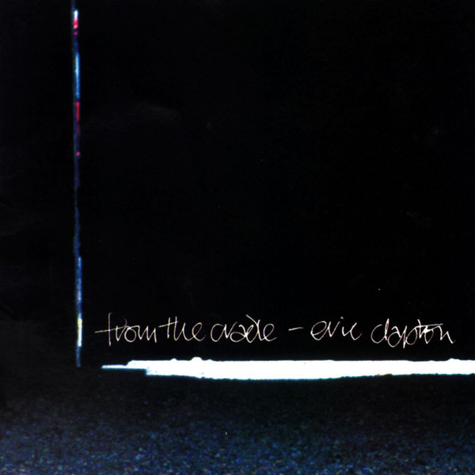

CD
From The Cradle
Eric Clapton
Media: — · Sleeve: —
—
Personal
Discogs SuggestedCA$13.75
Discogs MedianCA$13.75
Discogs HighCA$13.75
- Physical Copy ID
- BB-CD-0667
- Year
- 1994
- Label
- Reprise Records
- Catalog #
- 9362-45735-2
- Country
- Europe
- Genre / Style
- Rock, Blues · Blues Rock, Classic Rock